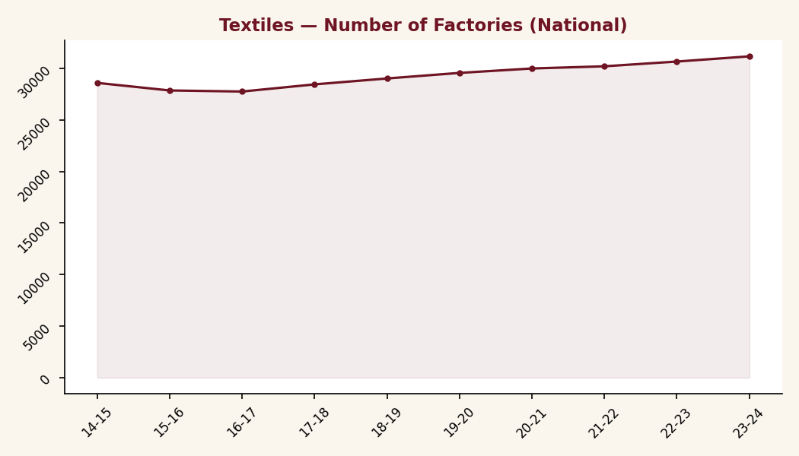
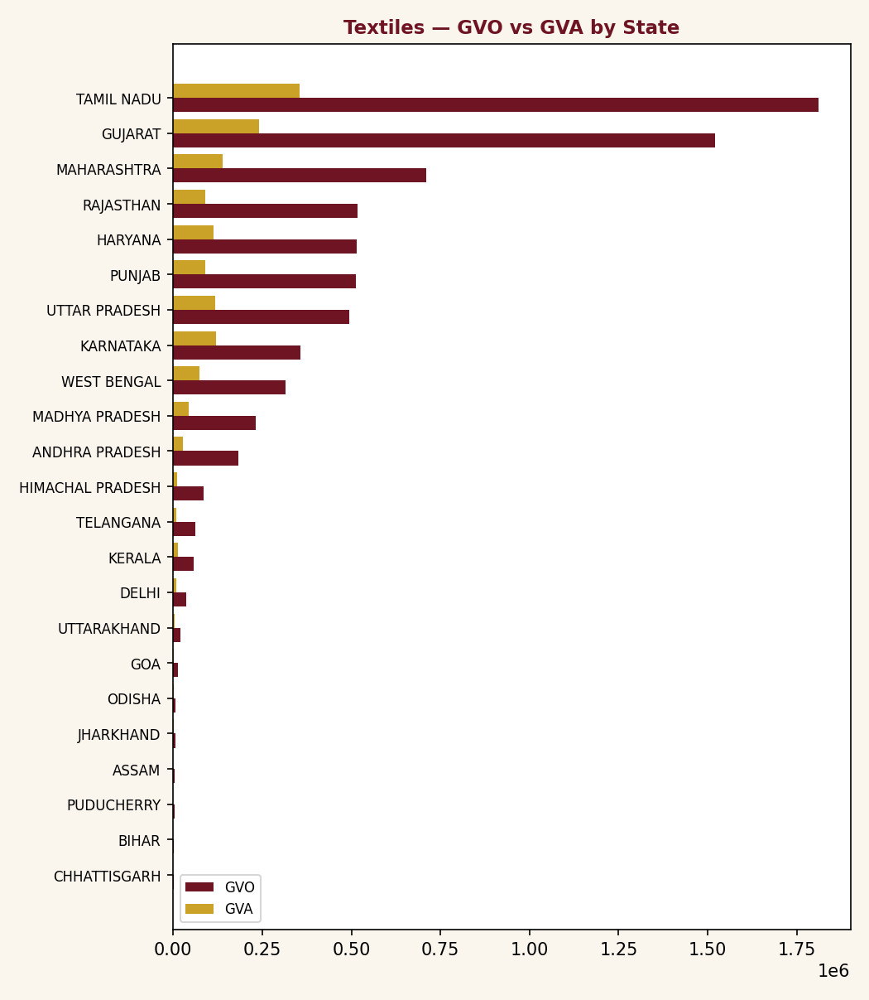
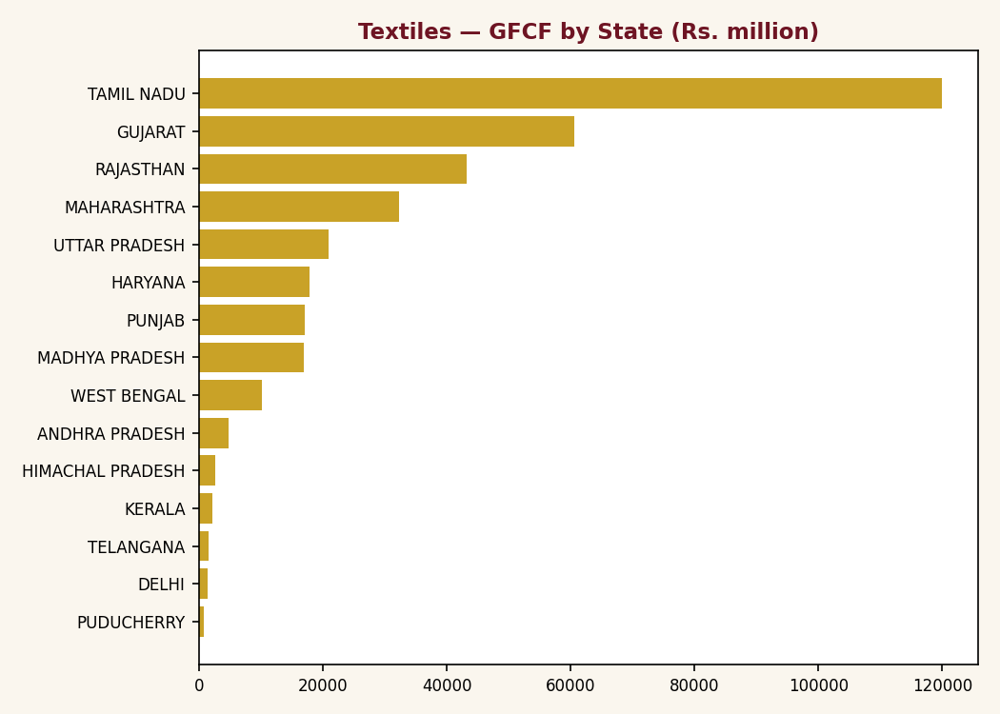

India's textile sector operates 31,176 registered factories and employs 25 lakh workers, a base large enough to anchor the country's manufacturing employment. Yet on the Index of Industrial Production it ranks 9th of 11 sectors under study across output level, latest growth, and full-period trend, and has not cleared its own 2018-19 peak since. This paper sets out the sector's scale, its output trajectory, its trade position, its cost and productivity structure, firm-level churn over a decade, the policy support directed at it, its principal production clusters, and state-level capital formation patterns, drawing on the Annual Survey of Industries, the Index of Industrial Production, CMIE, DGCI&S trade data, and the institute's internal cluster registry.
By raw size, textiles is one of India's foundational manufacturing sectors: 31,176 factories are registered under the Annual Survey of Industries (23,838 in operation), producing a combined Gross Value of Output of ₹7.81 lakh crore in 2023-24, up from ₹4.84 lakh crore in 2014-15.[1]
| Indicator | Value |
|---|---|
| Factories registered | 31,176 |
| Factories in operation | 23,838 |
| Total workers employed | 25.2 lakh |
| Gross Value of Output, 2023-24 | ₹7.81 lakh crore |
| Gross Value Added, 2023-24 | ₹1.54 lakh crore |

Textiles peaked on the Index of Industrial Production in 2018-19 (128.88) and has not returned to that level since. The COVID-year collapse (96.06 in 2020-21) was followed by a partial rebound, but the index has been sliding again since 2021-22, down to 108.72 in 2025-26, barely 3 points above where the sector started in 2012-13. Excluding pharmaceuticals from the comparison set (tracked separately, not folded into any other sector's index here), textiles ranks 9th of 11 sectors on index level, latest growth, and full-period CAGR, and is the second most volatile sector on the index after General Manufacturing.[2](a)
Figures in this section are directional rather than exact. The underlying HS-to-NIC concordance maps 95% of export value and 89% of import value to a sector; the remainder is unclassified and excluded rather than estimated, so totals should be read as a close approximation of trade flows, not an exact reconciliation.(b)
Textiles remains one of the few manufacturing sectors where India runs a genuine trade surplus: ₹2.35 lakh crore in FY24-25, on exports of ₹3.16 lakh crore against imports of ₹0.81 lakh crore. Import dependency is low, at 20.4%. Export growth (5.4% CAGR over five years) is positive but unspectacular for a sector that scaled output by 61% over the decade.[3]
Textiles carries the second highest employee cost share of any sector in this study, 10.5% of sales, behind only Leather and Related Products at 13.2%: a genuinely labour-intensive cost base. What is less obvious is that it also carries the second highest capital intensity, 1.52× Gross Fixed Assets to Sales, behind only Electrical Equipment, and well above Transport Equipment (1.33×) or Metals (1.07×). That combination of high labour cost and high asset intensity together is unusual: most sectors lean one way or the other. Sales per employee, at ₹3,274 million, is the second lowest of the 11 sectors, just above Leather and Related Products (₹3,201 million). R&D spend, at 0.5% of sales, is below Chemicals (2.14%) and Engineering Goods (1.85%), though not the very lowest: General Manufacturing (0.13%) and Metals (0.19%) spend even less.[4]
Derived indicators.(c) Output and value-added per worker are ASI economy-wide averages (2023-24); material intensity, labour cost share, and capital intensity are top-20 firm-panel averages (FY23-25) and are not on the same base.[1],[5]
Vardhman Textiles has held the number one sales rank in this 20-firm panel continuously from FY14 through FY25: the only true decade-long constant at the top. Welspun Living is the standout riser, climbing from 7th (₹3,301 crore) to 2nd (₹8,286 crore), a 151% increase. SEL Manufacturing is the mirror image: 8th in FY14 at ₹2,929 crore, down to 17th by FY25 at just ₹33 crore, a 99% collapse. Three of the original 20 firms tracked since FY14, Shahi Exports, Krishna Knitwear Technology, and Orient Craft, dropped out of continuous reporting before FY25.[4]
Concentration is rising, gradually. The top-3 firms' combined share was 42.6% in 2024-25; the sector's Herfindahl-Hirschman Index climbed from 803 in 2015-16 to 996 by 2024-25, still classified "Competitive" by standard thresholds, but on a steady upward drift rather than a static structure.[4]
Policy attention exists, but its scale does not match the sector's footprint. The Production-Linked Incentive scheme for textiles carries an outlay of ₹10,683 crore, equivalent to roughly 1.4% of the sector's 2023-24 Gross Value of Output, small relative to a sector generating ₹7.81 lakh crore in output and directly employing 25 lakh workers. Cumulative FDI since April 2000 stands at US$5.02 billion, and domestic capital expenditure remains MSME-dominated rather than large-ticket.[7]
An outlay equivalent to roughly one seventy-fifth of the sector's annual output is unlikely, on its own, to shift the structural pattern documented in §1 and §4: rising output without rising value capture, and a cost base that is both labour- and capital-intensive at once.
Production is concentrated in three states. Tamil Nadu and Gujarat together account for the large majority of Gross Value of Output among the leading textile-producing states; Maharashtra trails at less than half of Tamil Nadu's level.[1]

Jharkhand's Gross Fixed Capital Formation in textiles did register a very large year-on-year increase: it rose from ₹2.4 million in 2016-17 to ₹22.2 million in 2017-18, an increase of 825%, and then rose again to ₹296.8 million in 2018-19, a further 1,237% increase. A third, smaller spike took GFCF from ₹127.9 million in 2021-22 to ₹754.8 million in 2022-23, up 490%. So a claim of roughly 600 to 800% growth is accurate for at least one of these years (2017-18, at 825%), and understates the largest single jump (2018-19, at 1,237%).[1](f)
The context that has to travel with that figure: Jharkhand's textile GFCF never exceeds ₹755 million in any year of the series, against a national GFCF of ₹1.77 lakh crore to ₹3.67 lakh crore over the same period, and the state does not appear among the top 15 states by GFCF at all, as Figure 12 shows. Jharkhand's share of India's textile GVO stayed within a 0.011% to 0.073% band across the entire decade. The growth rate is real; the base it is growing from is not large enough to register at the national level.[1]

Put together, textiles is not a sector in decline; it is a sector that scaled in bursts, in 2018-19 and 2021-22, without compounding. Output grew 61% over the decade, but the value-added share of that output barely moved, R&D spend stayed thin, and the industrial policy outlay is a fraction of the sector's size. At the firm level, one player has held the top spot for a decade while another lost 99% of its sales, illustrating a sector wide enough to hold both trajectories at once.
Beyond state-level totals, textile output concentrates in a small number of named clusters, each specialised by product segment rather than by the sector as a whole. The three clusters below are the largest and best-documented in the underlying registry.[6](d)
| Cluster | State | Units (est.) | Turnover (est.) | Export value (est.) | Principal products | Export orientation |
|---|---|---|---|---|---|---|
| Tiruppur | Tamil Nadu | ~20,000 | n/a | ₹24,181 cr | Cotton knitted garments | Yes (Europe, US) |
| Ludhiana | Punjab | ~14,000 | ₹15,000 cr | ₹927 cr(e) | Woollen apparel, knitwear, winter wear | Partial |
| Surat | Gujarat | ~400 (86 large) | n/a | n/a | Synthetic and man-made-fibre textiles | Yes |